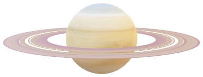

Marte
El enigmático "Planeta Rojo", con cañones, polos helados y secretos por descubrir.
Jú piter
El "Gigante Danzante" del sistema solar, con la Gran Mancha Roja en una majestuosa sinfonía cósmica.

Saturno
El majestuoso planeta anillado, destaca por su deslumbrante sistema de anillos y su atmósfera gaseosa marcada por tormentas.